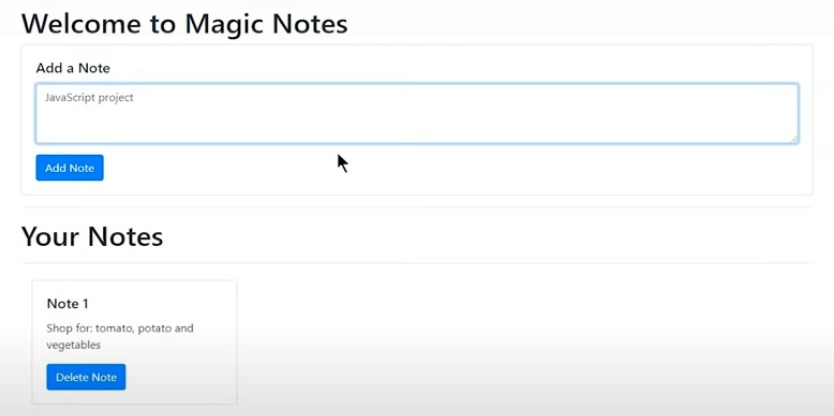

Magic Notes App
Note Taking Website App Using Pure JavaScript
Note-taking websites are the online equivalent of notebooks, and because they are digital, they can do more for you than paper ever could.
Note-taking websites are the online equivalent of notebooks, and because they are digital, they can do more for you than paper ever could.
The project setup is really simple.
Because we only want to use JavaScript without any frameworks.
Start by creating a new project folder in VS Code, and inside that project folder, create two empty new files: index.html and app.js.
The index.html file is the entry point for our website and contains the HTML code.
In this project, we are also using Bootstrap.
If you are not familiar with Bootstrap, then do not worry; just read the documentation on Bootstrap website.
To visit
click here